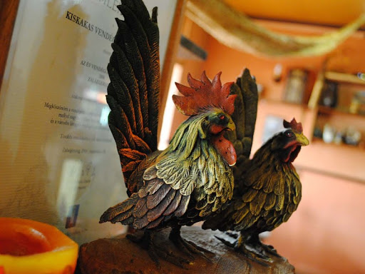

Pénteken a napsütést elsősorban csak fátyolfelhők szűrhetik, csapadék sehol sem várható. Mérséklődik, legyengül a szél. Hajnalra helyenként pára- és ködfoltok alakulhatnak ki. Reggel 3 és 9, délután 17 és 22 fok között alakul a hőmérséklet.
Szombaton a reggeli párás, ködös időt követően kisüt a nap, és csak fátyolfelhők szűrhetik a napsütést. Estig csapadék nem várható, majd az esti órákban nyugatra eső, zápor érkezhet, és feltámadhatz északnyugati szél. A legmelegebb órákban 18-23 fokot mérhetünk.
Vasárnap nyugaton, északon és a Dunántúlon egy hidegfront miatt időnkénti esőre, záporokra, feltámadó északnyugati szélre kell számítani. Itt a csúcshőmérséklet is csak 10-15 fok körül alakulhat, máshol viszont még szárazabb időre, 15-21 fokra van kilátás. Este, éjjel már többfelé várható csapadék. Hétfőn esős, szeles, hűvös idő valószínű.
| Hétfő | 14 | 7 |
| Kedd | 12 | 6 |
| Szerda | 12 | 5 |
| Csütörtök | 14 | 16 |
| Péntek | 15 | 20 |
| Szombat | 15 | 18 |
Csütörtökön a hidegfront fokozatosan elhagyja térségünket, de az érzékenyek körében még egész nap jelentkezhetnek tünetek. Emiatt görcsös panaszok, görcsös fejfájás, vérnyomás-ingadozás jelentkezhet. A szeles idő tovább fokozhatja a fejfájásos tüneteket, ingerlékenyebbek, nyugtalanabbak lehetünk. Alacsony lesz hő- és komfortérzetünk is, viszont a naposabb idő jó hatással lehet hangulatunkra, közérzetünkre. Nagy lesz a megfázásveszély, réteges öltözet javasolt. Erősítsük immunrendszerünket! Ha tehetjük, fogyasszunk naponta többször vitaminban gazdag zöldségeket, gyümölcsöket! Csütörtökön kezdetben a Dunától keletre fekvő tájakon várható eső, így az erre autózóknak vizes, csúszós utakra kell készülniük. Napközben mindenhol fokozatosan megszűnik a csapadék, egyre nagyobb területen süt ki a nap, így vezetés közben szükség lehet a napszemüvegekre. Sokfelé élénk, erős északi-északnyugati széllökések csökkenthetik jelentősebb mértékben a járművek menetstabilitását. Vezessünk körültekintően, tartsunk nagyobb követési távolságot! Balesetmentes közlekedést kívánunk!
| Hetfő | 1500Ft | Húsleves | Rántott hús |
| Kedd | 1300Ft | Gyümölcsleves | Rántott sajt |
| Szerda | 1000Ft | Halászlé | Somlói galuska |
Ne hagyja ki semmiképp ezeket a finom ételeket jó áron!
